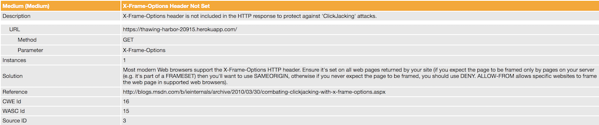

Security Assessment
Assessment on Paul Wullenweber by Amber Chong
The product is a private car service that takes a user's name and location to connect with a driver. I have been hired as a security consultant to document and resolve security issues in the application.
Methodology:
1. I used OWASP ZAP to run a report for vulnerabilities using GET request.
2. Manually ran curl to try to get script alerts through POST request.
3. Data Injection
4. XSS
5. Reading through source code.
Abstract of Findings
The issues I have found have to do with other browsers and servers accessing user sensitive information because the server is enabled to the open, coordinate and username values are exposed on the web page without user validation or authentication that are high security and privacy issues. On the lower end of severity are through the web browser if an attack was made on the interface of the client-side through masking a button by putting a different button over it or sanitizing the web page before loading the page.
Issue #1: CORS enabled using *
Location: Found in source code.
Severity: High
Enabling CORS in the header to allows any website to send an XHR request and have access to server response. This is a security issue since there is no form of authentication or selectivity of who is allowed to access the server response. This is a problem because another site can access a username and location based off lat and lng from user input.
Description: When looking through the code I found that in the response headers, it allows anyone to access the origin by using the wildcard symbol.
Proof of Vulnerability:
Resolution: Have some sort of authentication to make sure the user accessing the website has been authorized to view certain information. This could potentially be using the CORS OPTIONS method which allows the server to approve a trusted source when a pre-flight request has been made.
Issue #2: Values for lat & lng unprotected
Location: Found in pages that have functional GET routes.
Severity: High
When visiting pages '/' and '/passenger.json', the html displayed on the web page accessed through 'https://thawing-harbor-20915.herokuapp.com/' reveals all driver usernames, coordinates, and time of location and the same issue is seen on the web page of 'https://thawing-harbor-20915.herokuapp.com/passenger.json?username=[insert_name]' .
Description: Because CORS is enabled, anyone has access to any visible user data shown on the web page. This is a huge privacy concern since user data should be protected and there is no form of user validation.
Proof of Vulnerability:


Resolution: Instead of hiding information the web pages, have an authentication process to make sure certain parts of information are only available for certain groups. For example, people can only view user data if they are that user or a driver paired with that passenger.
Issue #3: Clickjacking: The X-Frame-Options Header is not set in the HTTP response, which allows for a UI redress attack.
Location: Source code --> allows for attack on web browser page
Severity: Medium
There are no existing buttons on any of the pages, however if someone were to figure out how to insert script alerts, it would be easy to have a privacy breach if a user clicked on the alert by mistake.
Description: Found through OWASP ZAP report. Clickjacking allows an attacker to trick a user into pressing a button that is masked by an opaque or transparent layer. Clicking the fake button will route the user to another page owned by another domain. Input boxes can also be masked to enter information in the wrong input box.
Proof of Vulnerability:

Resolution: [X-Frame-Options: SAMEORIGIN] Add this line of code in response header in all web pages since only web pages returned by site should be framed by the server. It allows only if the site which wants to load has a same origin.
Issue #4: Web Browser XSS Protection Not Enabled --> allows some categories of XSS attacks.
Location: Source code --> allows for attack on Web browser page
Severity: Low
XSS Protection is usually enabled by default, however, to enforce it for certain, it can be further prevented by enabling the XSS filter.
Description: Found through OWASP ZAP report. Enabling xss prevention will detect cross site-scripting attacks and prevent page from loading.
Proof of Vulnerability:

Resolution: Enable the web browser's XSS filter by setting the X-XSS-Protection HTTP response header to '1' to force prevention of XSS attacks.
[x-xss-protection:1;]
This line will enable the browser to sanitize the page when an attack occurs.
[x-xss-protection:1; mode=block]
This line does not sanitize the page, however, when a XSS attack occurs, the browser will prevent loading the page.
Conclusion
The source code has proven to be quite strong against XSS and data injection. Since there are no input fields on the client side, the main point of security is through inserting data into the database through a POST request '/rides'. However, since the source code sanitizes symbols from all user input, then inserting script was not viable. Additionally, the page '/passenger.json' does not display all passengers and only displays a specifically-requested username if one knew the username of a passenger in the database. The lat & lng values passed in by the user are also validated to ensure they are numbers and not strings or symbols, which also prevents manipulation and XSS of the values. Overall, privacy issues can be fixed through user authentication and preventative measures can be placed to avoid any attacks.
References:
https://stackoverflow.com/questions/29954037/why-is-an-options-request-sent-and-can-i-disable-it
https://developer.mozilla.org/en-US/docs/Web/HTTP/CORS
https://stackoverflow.com/questions/12001269/what-are-the-security-risks-of-setting-access-control-allow-origin
https://www.netsparker.com/web-vulnerability-scanner/vulnerabilities/missing-x-frame-options-header/